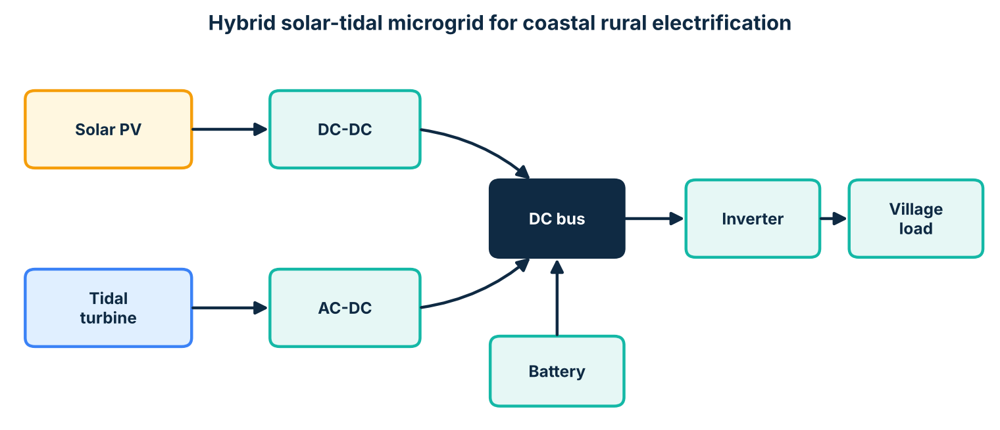

Overview
Many rural coastal communities in Bangladesh have limited grid access. I proposed a hybrid microgrid that combines solar PV with tidal energy, with a battery to balance the two.
Objective
Provide dependable electricity to a coastal village by combining two renewable sources that peak at different times.

Thought Process and Decisions
- Understand the need. I started from the problem: reliable power for a rural coastal community, where extending the main grid is costly.
- Pick complementary sources. Solar produces during the day and tides follow the lunar cycle, so together they cover more hours than either alone.
- Design the architecture. Both sources feed a common DC bus through their own converter (DC-DC for PV, AC-DC for the turbine). A battery on the bus covers gaps, and an inverter supplies the village load.
- Model in Simulink. I modelled each subsystem and connected them to study how the whole system performs.
- Assess performance. I looked at power balance and how much the battery needs to supply, to judge whether the hybrid approach is practical.
Results and Evidence
Screenshots, waveforms and test results for this project:


My Contribution
I was responsible for the design and simulation work described above: choosing the architecture, making the design decisions, building the model and evaluating the results.
Skills Demonstrated
- Renewable energy integration
- System modelling
- Rural electrification
- MATLAB / Simulink